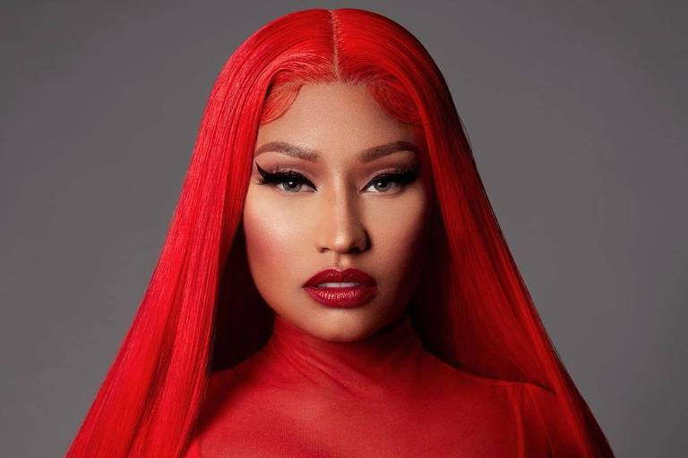
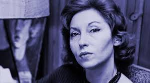

Beyoncé , é uma cantora, compositora, atriz, modelo, dançarina, empresária, produtora, diretora e roteirista norte-americana.[4] Nascida e criada em Houston, no Texas,[5] Beyoncé se tornou conhecida no ano de 1997, como uma das integrantes do grupo feminino de R&B Destiny's Child, que já vendeu mais de 178 milhões de discos mundialmente, 118 milhões em carreira solo e 60 milhões com o grupo Destinys Child, de acordo com a Columbia Records em 2015.[6]
Ver mais...
Dolores Gonçalves Costa , artisticamente conhecida como Dercy Gonçalves (Santa Maria Madalena, 23 de junho de 1907 — Rio de Janeiro, 19 de julho de 2008), foi uma humorista, atriz, autora, diretora teatral, produtora teatral e cantora brasileira. Oriunda dos espetáculos circenses, tornou-se uma das maiores estrelas do auge do teatro de revista na década de 1930 e da produção cinematográfica brasileira a partir da décadas de 1940.[3] Foi reconhecida pelo Guinness Book como a atriz com maior tempo de carreira na história mundial, totalizando 86 anos.[4]
Celebrada por suas entrevistas irreverentes, bom humor e emprego constante de "palavrões", foi uma das maiores expoentes do teatro de improviso no Brasil.[5] Ver mais...

Onika Tanya Maraj-Petty (Saint James, 8 de dezembro de 1982), conhecida por seu nome artístico Nicki Minaj, é uma rapper,[3][4] cantora, compositora, modelo e atriz trinidiana radicada nos Estados Unidos.[5] Minaj nasceu no país caribenho e mudou-se para o bairro nova-iorquino do Queens quando tinha cinco anos de idade, se formando em escolas artísticas mais tarde. Depois de lançar três mixtapes entre 2007 e 2009, assinou um contrato com a gravadora Young Money. Ver mais...

Clarice Lispector , nascida Chaya Pinkhasivna Lispector (ucraniano) Chechelnyk, 10 de dezembro de 1920 — Rio de Janeiro, 9 de dezembro de 1977,[2] foi uma escritora e jornalista brasileira nascida na Ucrânia.[3] Autora de romances, contos, e ensaios, é considerada uma das escritoras brasileiras mais importantes do século XX.[4][5] Sua obra está repleta de cenas cotidianas simples e tramas psicológicas, reputando-se como uma de suas principais características a epifania de personagens comuns em momentos do cotidiano. Quanto às suas identidades nacional e regional, declarava-se brasileira e pernambucana.[6][7] Ver mais...